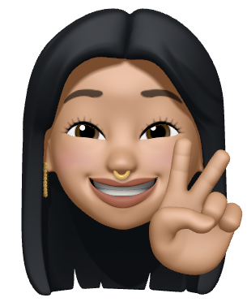
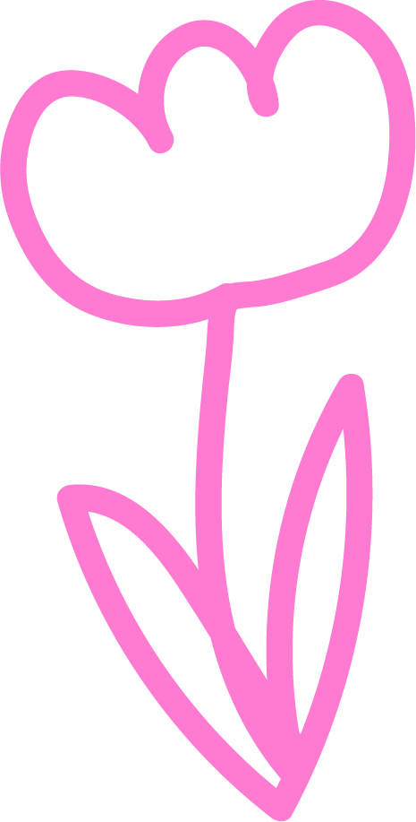

Role
UX Researcher
UI/UX Designer
Timeline
April 2023 (2 weeks)
Overview

For the final assignment of DSGN_297 Wireframing & App Design, we were asked to think of a problem that we'd like to solve with a mobile application. As a college student who chronically struggles with time management and finding the motivation to study, I decided to design a productivity app that would help me be a more productive student.
Research
I thought a lot about why I personally found it so difficult to manage my time productively when it came to studying and getting work done. This led me to motivation. What motivates me to go about my day, and when am I most motivated? In addition, what makes me unmotivated, and when am I least motivated?

User persona: Alice Qiu
As a college student, I want to be better at time management and more motivated to study, do work, etc. to become more productive.
Attributes
- More extrinsically motivated than intrinsically motivated
- Likes new and pretty things, gets bored easily
- Loves studying with friends, finds the mere presence of others to be motivating
Challenges
- Finds it harder to do things that aren't instantly rewarding
- Less likely to use an app/method over a long period of time
- Easily distracted by friends and tempted to start chatting instead
I am not the first student to struggle with motivation (or lack thereof), and productivity apps are certainly not a new concept. The problem was, I've tried using productivity apps before, but none of them has ever stuck. This either meant that existing productivity apps aren't made for users like me, or that I was beyond saving. Naturally, I leaned towards the first possibility and decided to make a productivity app to help the Alice Qiu's of the world find motivation.
Looking at existing productivity apps
So, to make sure that my app is something that would work for me, I analyzed existing productivity apps and techniques to identify why these apps work for others as well as why they didn't work for me. Specifically, I looked at the Flora app, focusing on what I considered to be the 5 most crucial criteria a productivity app should address: extrinsic motivation, intrinsic motivation, aesthetics, customizability, and functionality.

Case study: Flora
A productivity app where the user sets a duration to focus (e.g. 30 minutes) and, during this duration, an in-app tree will grow. If the user makes it through the focus session without leaving the app, they will be rewarded with a grown tree. Conversely, if the user leaves the app before the time is up (to check Instagram or text, for instance), the tree dies.
The 5 criteria:
- Extrinsic motivation: does it provide extrinsic motivation?
- Intrinsic motivation: does it provide intrinsic motivation?
- Aesthetics: does it look good?
- Customizability: does the user have a degree of control in the app/over their experience?
- Functionality: is it easy to use?
User's rating:

Evaluating Flora against these 5 criteria, I found that the app didn't provide as much extrinsic motivation nor customizability, which made using the app feel less rewarding and less interesting for users who need that extra positive enforcement. As such, I knew I needed to up the extrinsic motivation and customizability for the app I make while ensuring it was also intrinsically motivating, aesthetic, and functional.
Process
With a better understanding of productivity apps and the criteria mine needed to address, I began working on my app. I started with basic productivity tools such as to-do lists and interval timers. The challenge was figuring out how to build upon these tools to create a specific productivity app that was appealing and effective for the target users. To do that, I needed to design features that targeted the users' unique attributes and challenges.
Designing for the user
One of the user attributes was "finds studying with others to be motivating", so I knew that the app needed a feature that allowed people and friends to use the app together to study together.
Going back to the Flora case study, extrinsic motivation and customizability were things I especially wanted the app to emphasize because the user was 1) more extrinsically motivated, and 2) got bored easily. Extrinsic motivation is all about deriving motivation from external forces such as rewards and punishments, so I started to think of feasible ways for the app to incentivize studying via rewards. After some brainstorming, I decided that the best way to incentivize studying through external motivation while giving users more opportunities to customize their experience was to gamify studying.
This led me to the concept of study space. In real life, everyone has a space where they study or work. In the study space app, each user has a study space (the ‘home’ of the game). Users ‘play’ by using the app to study, which is how they earn (fake) money to purchase various decorations such as posters, stationaries, chairs, etc. for customizing their study space. Essentially, study space incentivizes users to study more for the purpose of earning more money and customizing their study space.
Outcome
As this was my first time designing an app, there were certainly a lot of learning curves. From coming up with a working idea, to making lo-fi sketches, to translating those sketches into a Figma prototype, I learned a lot about app design and wireframing.
This assignment underscored what I love most about design: problem-solving. It was definitely a challenge designing study space and making it an appealing productivity app to users like me who don’t find productivity apps to be, well, appealing. But, that’s also what made it fun! I enjoyed researching what motivated users and how that affected their relationship with productivity apps, then translating those user needs into features that made study space a productivity app users like me would want to use.
Through working on study space from start to finish, I gained a newfound appreciation for 1) the research that goes into identifying and describing a question or an user's needs, and 2) the development a product undergoes before it becomes a solution to the user’s problems or needs. Though there is definitely room for improvement for study space, I am ultimately proud of the product. In the future, I'd love to improve study space by doing more comprehensive research on who the target users are besides myself, as well as adjusting and upgrading the features and general appearance of the app.
